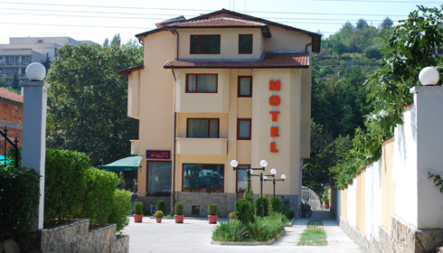
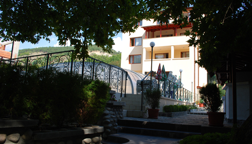
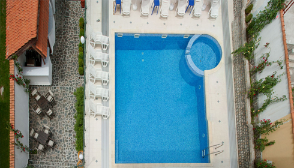
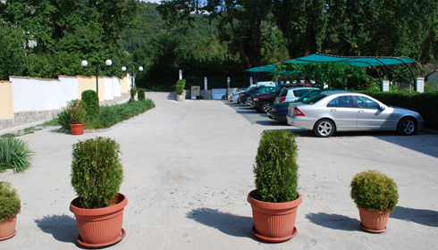
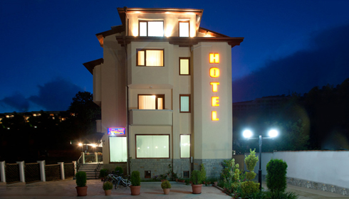
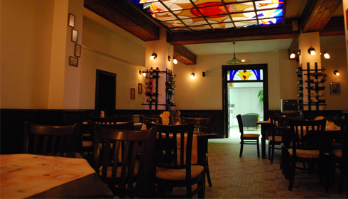

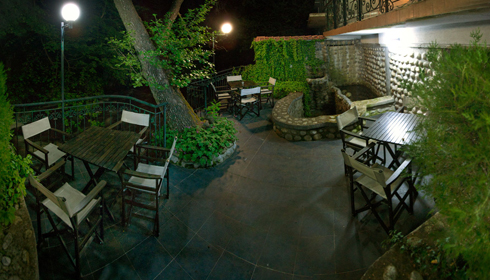
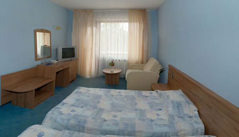
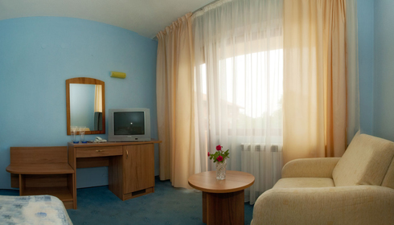
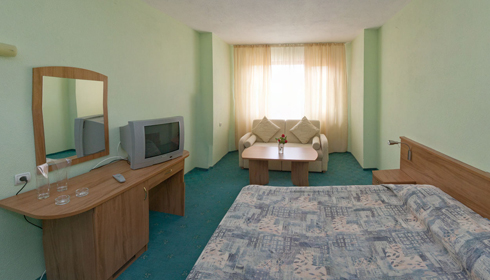


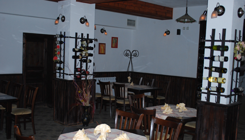

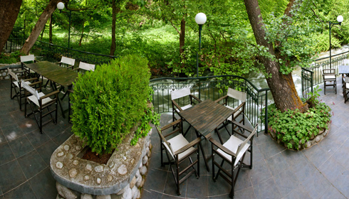
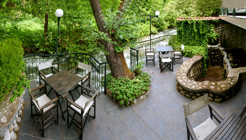

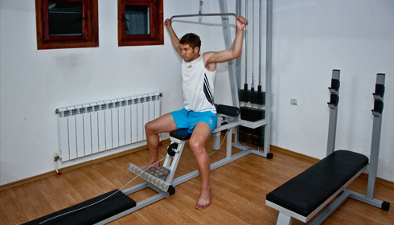
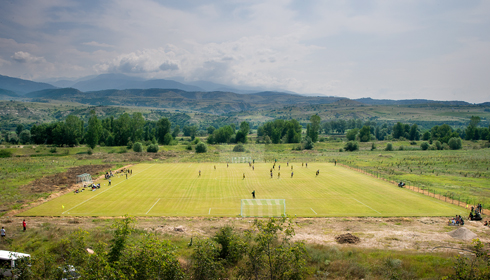


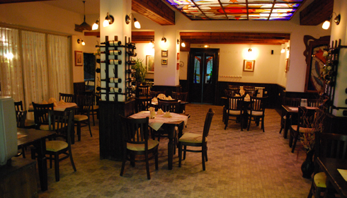
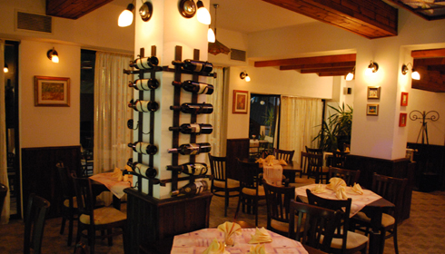
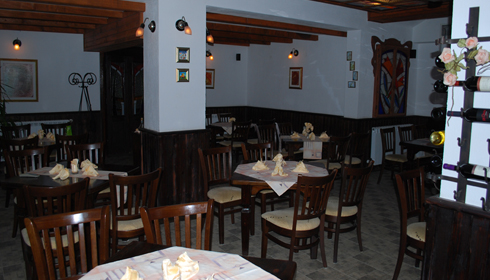
Отель расположен в г. Сандански, у подножья горного массива Пирин, на берегу быстрой и прохладной горной реки. Рядом с уникальным природным городским парком.
Площадь территории 1497 кв м.
Большая собственная парковка.
Удаленность от центра города – 15 минут пешком.
Здание в 3 этажа (15 метров высота) и полуподвальный этаж. Общая площадь здания 1356 кв. м. Номерной фонд 21 номер.
Из них 13 двухместных, 5 трехместных, 3 апартаменты. Общее количество мест – 53
Отель оборудован централизованным горячим водоснабжением, системой отопления в зимнее время.
На территории расположен бассейн обьемом 150 куб.м.
Максимальное к-во лежаков вокруг бассейна – 35 шезлонгов.
Бассейн с раздвижной укрывающей конструкцией и подогревом воды в зимнее время.
Ресторан с кухней и баром на 60 мест.
Летний сад-ресторан в тени деревьев у прохладной реки на 80 мест.
В прохладе цокольного этажа расположен фитнес уголок с сауной, джакузи, массажным кабинетом и тренажерным залом.
Отель оснащен кабельным телевидением и WiFi.
Отель находиться в частной собственности и свободен от любых обременений.
Стоимость отеля 1 100.000 евро.